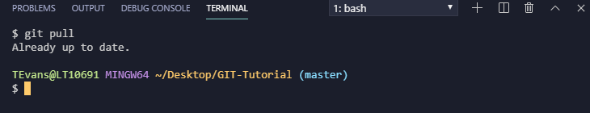
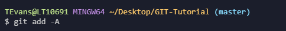
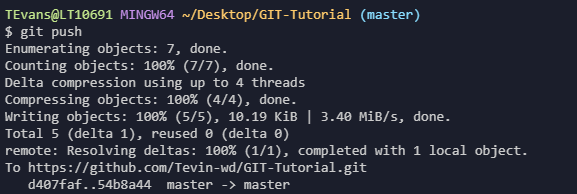
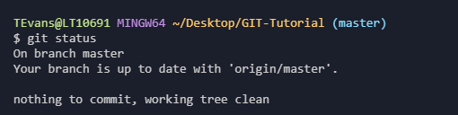
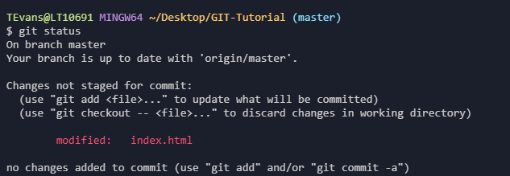
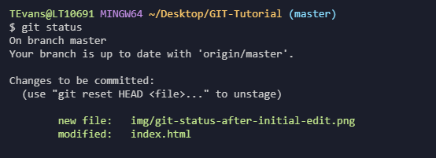

git pull
The 'git pull' command is going to make sure you pull in any and all changes that were made to the master branch. After confirming the files are up to date you can make any changes or continue working on what you planned to do.
git add
The 'git add <filename>' command will save that files changes made so that they can be pulled up again
if something
happens and they can be committed at any point.
You can put an -A or * to make sure all the changes are being added into staging.
git commit
The 'git commit -m "commit message"' command will add
all the changes made to Staging. Staging means they are ready to be merged to
the master branch.
The -m "" means
commit message. You will want explain this commit in as much detail as possible with as little words
as possible.
You can also use 'git commit -A' to commit any files you've added with 'git add', and also commit any files
you've changed since then
git push
the last command you will use is the 'git push' command. That will take your changes from staging and merge them with the master branch.
git status
the 'git status' command will give you a list of files you've changed and those you still need to add or commit or will let you know your branch is up to date.
Below is the shot if you were to type 'git status' after making your initial changes to your files. It is basically saying the file in red was edited but you did not 'git add' this file.
Below is the shot if you were to type 'git status' after you 'git add' your files. It is basically saying the files in green have been added and saved and they are ready to be comitted.
if you 'git status' after commiting your changes you wil get a "Your branch is up to date" message letting you know your file ws committed and merged to the master branch.